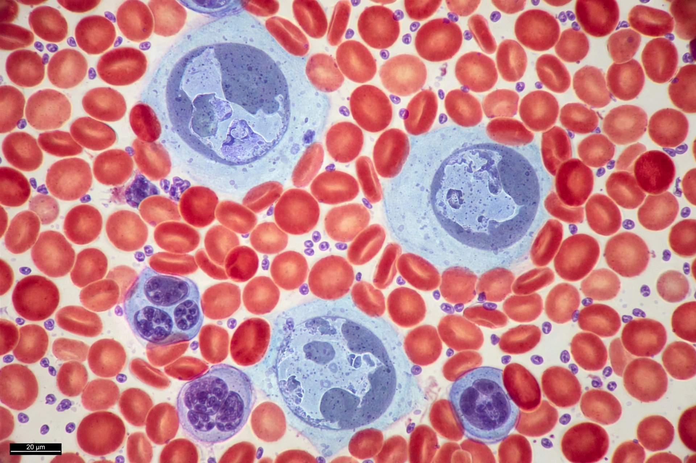

Leukaemia (British spelling; American leukemia) is a group of blood cancers that usually begin in the bone marrow and produce high numbers of abnormal blood cells. These blasts crowd out healthy cells, causing bleeding, bruising, fatigue, fever and increased infection risk.

Leukaemias are divided by speed (acute vs chronic) and cell lineage (lymphoid vs myeloid): acute lymphoblastic leukaemia (ALL, most common in children), acute myeloid leukaemia (AML), chronic lymphocytic leukaemia (CLL) and chronic myeloid leukaemia (CML, associated with the Philadelphia chromosome / BCR-ABL).
Risk factors include ionising radiation, benzene, prior chemotherapy, Down syndrome and genetic predisposition; most cases have no clear cause. Diagnosis is by blood tests and bone marrow examination, with cytogenetics and molecular testing guiding therapy.
Treatment includes chemotherapy — historically including methotrexate, an antimetabolite — targeted therapy (e.g., imatinib for CML), immunotherapy, radiation and stem cell transplantation. Prognosis varies widely by type and age; childhood ALL cure rates now exceed 85-90% in high-income countries.